引言：準則一變，分群就變
▼一句話
前面幾章都在做監督式分類；這一章開始沒有類別標籤，要靠你自己定的準則，把資料「合理地」分成一群一群。準則一換，分出來的群就可能完全不同。
是什麼
到目前為止，訓練樣本都帶著類別標籤。從這一章起進入非監督式的世界：標籤沒了，我們的工作變成把樣本「揭開」成一組說得通的叢集（cluster），好看出彼此的相似與差異，再據此下結論。同一件事在不同領域有不同名字：樣式辨認裡叫非監督式學習或無教師學習，生物學裡叫數值分類學，社會科學裡叫類型學，圖論裡叫分割。
教科書用一組動物把這件事講得很清楚。名單是：綿羊、狗、貓（哺乳類），麻雀、海鷗（鳥類），蝰蛇、蜥蜴（爬蟲類），金魚、紅鯔、藍鯊（魚類），以及青蛙（兩棲類）。你必須先選定一個分群準則，才知道該怎麼切：
- 產仔方式：綿羊、狗、貓、藍鯊同一群，其餘動物另一群。
- 有沒有肺：金魚、紅鯔、藍鯊同一群，其餘動物另一群。
- 棲地：陸生（綿羊、狗、貓、麻雀、海鷗、蝰蛇、蜥蜴）一群；只住在水裡（金魚、紅鯔、藍鯊）一群；青蛙可水可陸，自己成第三群。
- 有沒有脊椎：全部動物落在同一群。
- 複合準則（產仔方式＋有沒有肺）：會切成四群。
分群其實也是人類每天都在做的事。資訊太多，不可能把每一筆都當獨立事件處理，所以會把物件、人、事件歸到有共同屬性的群。例如大多數人心裡都有一個「狗」的群：看到草地上睡著的狗，就算從沒聽過這隻叫過，也會推論「牠會叫」。
跟監督式學習一樣，每個樣本都用 $l$ 維特徵向量來表示。專家做一次分群，大致要走六步：
- 選特徵：盡量把任務相關的資訊編碼進去，同時保持精簡、減少特徵之間的冗餘；必要時先做前處理，手法跟監督式分類那一套相同。
- 接近測度：量化兩個特徵向量有多像、或多不像。要讓各特徵公平貢獻，不要讓某一維把其他維壓過去，這件事通常在前處理就處理好。
- 分群準則：什麼叫「合理的一群」，取決於專家怎麼解讀、以及預期資料裡會長什麼形狀。有人覺得緊密團塊才算一群，有人覺得細長一條也算；準則可以寫成代價函數，也可以是一組規則。
- 分群演算法：在測度與準則都定好之後，選一個具體演算法把結構挖出來。
- 驗證結果：用適當的檢定確認分出來的群站不站得住。
- 詮釋結果：領域專家要把分群結果跟其他實驗證據合在一起，才能下正確結論。
有時還會多一步叫 clustering tendency（分群傾向）：先測這批資料到底有沒有叢集結構。如果資料完全是隨機的，硬要分群就沒有意義。
特徵、測度、準則、演算法只要換一套，結果可以完全不一樣。主觀性從這裡開始就是日常。圖 11.2 那批點，最「合理」的答案好像有兩種：實線圈出的四群（切得細），虛線圈出的兩群（切得粗）。哪一種才對？沒有唯一答案，兩種都站得住，最後通常交給領域專家，依他的知識來選比較 sensible 的那一種。
為什麼
沒有標籤，就沒有「標準答案類別」可以對答案；「合理」完全取決於你問的問題。動物例子不是在考生物，而是在示範：同一批對象，問產仔、問肺、問棲地、問脊椎，得到的地圖會差很多。人類日常分群也是同一套邏輯：先有共同屬性，才能對沒見過的個體做推論。
六步驟加上分群傾向，是為了把「感覺上該分」變成可執行的流程。圖 11.2 則提醒你：粗切與細切可以同時合理，分群結果本來就帶主觀成分，不要幻想有一個全世界都同意的切法。
怎麼用 / 怎麼記
- 口訣：準則一變，分群就變；沒有標籤，就沒有唯一正確切法。
- 動物例子：產仔（藍鯊跟哺乳類一夥）、肺（三條魚一夥）、棲地（青蛙獨一檔）、脊椎（全體同一群）、複合準則（四群）。
- 流程卡：選特徵 → 接近測度 → 準則 → 演算法 → 驗證 → 詮釋；有時先做分群傾向，確認資料不是一團隨機。
- 主觀性：同一張散點圖可以粗切成兩群、細切成四群，兩種都合理，最後交給專家。
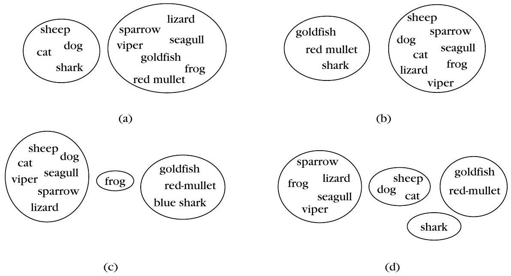
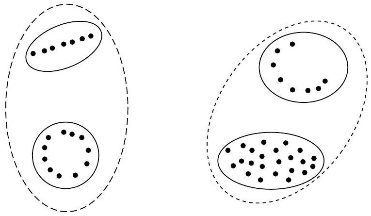
若以「有沒有肺」當分群準則，原文動物例子會得到什麼結果？
關於圖 11.2 那批點的兩種切法，下列哪一項最符合原文？
分群分析的四種用途
▼一句話
分群不只是「把東西分成幾堆」：它可以拿來壓縮資料、提出假設、檢驗假設，也可以依群的特性去預測新樣本該怎麼處理。
是什麼
原文把分群分析的基本用途整理成四個方向：
- 資料縮減（data reduction）：樣本數 $N$ 往往很大，逐筆處理很吃力。先把資料分成 $m$ 個說得通的群，且 $m\ll N$，之後把每一群當一個實體來處理。資料傳輸就是典型例子：先為每一群定一個代表點，真正要傳的不是原始樣本，而是「這個樣本屬於哪一群代表」的代號，於是達到壓縮。
- 假設產生（hypothesis generation）：對資料做分群，是為了從資料的本性推出一些假設。這裡的分群是「提出假設的載具」；這些假設接下來必須用其他資料集去驗證，不能拿同一批資料又產生又證實。
- 假設檢定（hypothesis testing）：反過來，分群用來檢查某個既有假設站不站得住。例如假設「大公司會海外投資」。做法是對一批夠大、夠有代表性的公司做分群，每家公司用規模、海外活動、以及完成應用研究計畫的能力來描述。若分完之後出現一群「規模大且有海外投資」的公司（不管研究能力強不強），這個假設就得到分群分析的支持。
- 依群預測（prediction based on groups）：先對既有資料分群，再用形成該群的樣本特性替每一群命名、定性。之後來了一個未知樣本，找出它最可能屬於哪一群，就用那一群的特性來描述它。原文的例子是：同一種病的患者依「對特定藥物的反應」分成若干群；新患者來了，先對到最合適的那一群，再據此決定用藥。
為什麼
沒有標籤時，你通常不是為了「分對標準答案」，而是為了後面要做的事。資料太多就先縮成代表；還不知道該問什麼就先讓分群提出假設；已經有一句話想驗證，就看分群會不會長出符合那句話的群；已經知道各群代表什麼，就可以拿來預測新個案。四種用途對應四種問法，選錯用途，後面的設計也會跟著偏。
怎麼用 / 怎麼記
- 縮減：$m\ll N$，傳代表代號，不傳整筆樣本。
- 產生：分群負責「提出」假設，驗證要換別的資料。
- 檢定：大公司海外投資——若真的出現「大且海外投資」那一群（與研究能力無關），假設就被支持。
- 預測：患者依用藥反應分群，新患者對到哪一群就怎麼開藥。
資料傳輸時，先為每一群定代表點、只傳送對應代號，原文把這種用途稱為什麼？
若假設是「大公司會海外投資」，分群後出現一群「規模大且有海外投資」的公司（無論應用研究能力如何），原文怎麼解讀？
特徵四種類型：名義、順序、區間、比率
▼🤖 AI 生圖可用：重繪此示意圖的提示詞（結構化）
WHAT: 四種特徵類型（名義 nominal、序數 ordinal、區間 interval、比率 ratio）的巢狀包含關係示意圖，以四層由外而內的區域呈現，並以攝氏溫度為例旁註「差有意義／比有意義」的分岔。 WHY: 讓讀者即使遮住文字也能看出因果：後面的類型擁有前面全部性質（ratio ⊃ interval ⊃ ordinal ⊃ nominal）；反直覺在於攝氏溫度的差值有意義、比值卻無意義，因此 interval 不是 ratio。 MUST show: 四層巢狀區域（最外 ratio 最大、最內 nominal 最小，不可四個並排盒子）；每層有簡短中文標籤；interval 層旁分岔：「差有意義 ✓」與「比有意義 ✗」；底部或旁註反直覺句「攝氏 10°C 不是 5°C 的兩倍」。配色主色 cyan #0891b2 / #155e75。 AVOID: LaTeX 或數學公式；方框＋術語連連看流程圖；class="card"；外鏈字體；四個等大方框並排。 STYLE: flat vector, white background, cyan #0891b2.
一句話
特徵的值不是都能拿來加減乘除：名義只能編碼狀態，順序能比大小但不能談差距，區間能談差距但不能談倍數，比率才能談「是幾倍」。
是什麼
特徵的取值可以來自連續範圍（實數的子集），也可以來自有限離散集合。若離散集合只有兩個元素，這個特徵就叫二元或二分特徵。
另一種分類看的是「這些值的相對意義有多強」，由弱到強分成四類：
- 名義（nominal）：可能的值只是在編碼狀態。例如性別，用 1 代表男、0 代表女。對這些數字做任何定量比較都沒有意義，不能說「1 比 0 大一倍」。
- 順序（ordinal）：值可以有意義地排序。例如樣式辨認課的成績等第用 4、3、2、1 對應「優、很好、好、不好」。順序是清楚的，但相鄰兩個等級之間的差距沒有定量意義，不能當成等距的分數差。
- 區間（interval-scaled）：兩個值的差有意義，但比值沒有意義。典型例子是攝氏溫度。倫敦 5°C、巴黎 10°C，說「巴黎比倫敦高 5 度」沒問題；說「巴黎是倫敦的兩倍熱」就沒有意義，因為攝氏的零點是約定的，不是「完全沒有溫度」。
- 比率（ratio-scaled）：兩個值的比值有意義。體重就是：100 kg 的人可以合理說是 50 kg 的人的兩倍重。
依名義 → 順序 → 區間 → 比率這個次序，後面的類型包含前面所有性質。例如區間尺度已經具備順序與名義的性質。這個包含關係後續在討論接近測度時會用到。
例 11.1 想依「發展前景」替公司分群，可同時考慮：公營或民營、有沒有海外活動、近三年年度預算、投資金額、以及預算與投資的變化率。於是每家公司是一個 $10\times 1$ 向量：
- 第 1 維：名義，編碼「公營／民營」。
- 第 2 維：順序，離散取值 $0,1,2$，對應「沒有投資、投資很少、投資很大」（描述海外活動程度）。
- 其餘各維：比率尺度（預算、投資、變化率這類可以談倍數的量）。
為什麼
分群要用接近測度比較兩個向量。如果把名義編碼當成真正的數字去減、去除，算出來的「距離」是假的。攝氏溫度能減不能除、成績等第能排不能減、性別連排都沒有意義——測度必須對應特徵類型，後面選演算法才不會鬧笑話。例 11.1 也提醒你：同一個向量裡常常混著好幾種尺度，不能整條向量一視同仁。
怎麼用 / 怎麼記
- 名義：狀態代碼，不能比大小（性別 0/1）。
- 順序：能排，不能談差距（成績 4>3>2>1）。
- 區間：能談差，不能談倍（攝氏 10°C 不是 5°C 的兩倍熱）。
- 比率：能談倍（100 kg 是 50 kg 的兩倍）。
- 包含關係：後面的類型擁有前面類型的全部性質。
- 例 11.1：10 維公司向量＝第 1 名義、第 2 順序、其餘比率。
倫敦 5°C、巴黎 10°C，原文用這個例子要說明什麼？
例 11.1 用 $10\times 1$ 向量描述公司時，各維的特徵類型是？
硬分群與模糊分群
▼一句話
硬分群規定每個樣本只能進一群，而且各群非空、合起來剛好是全部資料；模糊分群則讓每個樣本用 0 到 1 的隸屬度同時屬於多群，但對每一筆樣本，各群隸屬度加起來必須是 1。
是什麼
「叢集」很難有人人都接受的定義，文獻裡常用「相似、相像」這類含糊詞，或只適用於某一種形狀，定義往往含糊甚至循環。Everitt 把特徵向量看成 $l$ 維空間中的點，把叢集說成「點密度相對高的連續區域，中間隔著密度相對低的區域」——這樣描述的群有時叫自然叢集，比較接近我們在二、三維裡用眼睛看到的團塊。
下面這套定義雖不是萬能，但足以讓我們開始做事。令資料集為
$$ \begin{equation*} X=\left\{\boldsymbol{x}_{1},\boldsymbol{x}_{2},\ldots,\boldsymbol{x}_{N}\right\} \tag{11.1} \end{equation*} $$
$X$ 的一個 $m$-clustering $\Re$，就是把 $X$ 分割成 $m$ 個集合（叢集）$C_{1},\ldots,C_{m}$，並且同時滿足三件事：
- 各群非空：$C_{i}\neq\emptyset,\; i=1,\ldots,m$
- 聯集剛好是全部資料：$\cup_{i=1}^{m}C_{i}=X$
- 兩兩互斥：$C_{i}\cap C_{j}=\emptyset,\; i\neq j$
此外，同一群裡的向量彼此「比較像」，跟其他群的向量「比較不像」。像不像怎麼量化，跟群的形狀很有關係：緊密團塊、細長條狀、殼狀（環／曲面）各自需要不同的相似度測度。
上面這套定義裡，每個向量只屬於一群，這種分法叫 hard（硬）或 crisp（清晰）分群。另一條路用 Zadeh 的模糊集合。把 $X$ 分成 $m$ 群的模糊分群，由 $m$ 個函數 $u_{j}$ 來刻畫：
$$ \begin{equation*} u_{j}: X \rightarrow[0,1], \quad j=1, \ldots, m \tag{11.2} \end{equation*} $$ $$ \begin{equation*} \sum_{j=1}^{m} u_{j}\left(\boldsymbol{x}_{i}\right)=1, \quad i=1,2, \ldots, N, \quad 0\lt \sum_{i=1}^{N} u_{j}\left(\boldsymbol{x}_{i}\right)\lt N, \quad j=1,2, \ldots, m \tag{11.3} \end{equation*} $$
這些 $u_{j}$ 叫隸屬函數。值靠近 1 表示高度屬於該群，靠近 0 表示幾乎不屬於。同一個向量可以「某種程度」同時屬於好幾群。若兩個向量在同一群的隸屬度都接近 1，就視為彼此相似。式 (11.3) 右邊那條 $0\lt \sum_{i}u_{j}(\boldsymbol{x}_{i})\lt N$ 是在禁止空洞的群（沒分到任何向量），對應硬分群裡的 $C_{i}\neq\emptyset$。
若把 $u_{j}$ 的值限制成只能是 $\{0,1\}$（要嘛全有、要嘛全無），模糊分群就退回前面的硬分群，此時這些函數改叫特徵函數（characteristic functions）。
為什麼
很多真實資料沒有乾淨的邊界：一筆樣本可能兩邊都像一點。硬分群強迫你選邊，適合邊界清楚、群與群互不重疊的情況。模糊分群把「像到什麼程度」留下來，結構資訊比較豐富。式 (11.3) 的兩個條件其實在做兩件很實際的事：每一筆的隸屬度加總為 1，避免「什麼都是、什麼都不是」；每一群的總隸屬度嚴格介於 0 與 $N$ 之間，避免空群或把全部資料吞進同一群的無聊解。
群的形狀也很關鍵：用適合緊密團的測度去套細長條或殼狀群，會把明明該連在一起的點拆掉。定義裡的「相似」必須跟著形狀走，不能只用一種距離闖天下。
怎麼用 / 怎麼記
- 硬分群三條件：非空、聯集為 $X$、兩兩交集為空；每點只進一群。
- 形狀：緊密、細長、殼狀，測度要跟著換。
- 模糊：$u_{j}\in[0,1]$，每點各群加總為 1，每群總隸屬度在 $(0,N)$ 之間。
- 還原：$u_{j}$ 只取 0 或 1 時，模糊分群＝硬分群，隸屬函數變成特徵函數。
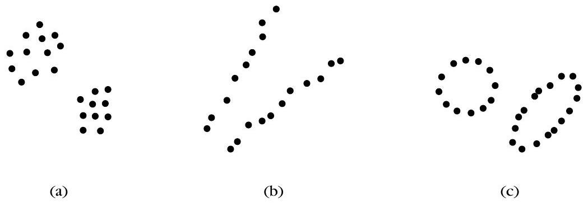
資料集 $X$ 的硬 $m$-clustering 必須同時滿足哪三個條件？
關於模糊隸屬函數，式 (11.2) 與 (11.3) 下列哪一項正確？
相異度測度 DM：從函數到度量
▼🤖 AI 生圖可用：重繪此示意圖的提示詞（結構化）
WHAT: 三角不等式（triangle inequality）示意圖：平面上三點 A、B、C，比較 A→C 直達距離與 A→B→C 繞路距離。 WHY: 讓讀者即使遮住文字也能看出因果：直達必須 ≤ 繞路，否則不是 metric；反直覺在於只滿足對稱性與有下界還不足以成為度量。 MUST show: 三點形成三角形；A→C 實線（較短）與 A→B→C 虛線折線（較長）；標示「直達 ≤ 繞路 ✓」；另加一組失敗對比（直達比繞路長，標紅 ✗「非 metric」）；可小字提示「對稱＋下界 ≠ 度量」。配色主色 cyan #0891b2 / #155e75。 AVOID: LaTeX 或數學公式（如 d(x,z)≤d(x,y)+d(y,z)）；方框＋術語連連看；class="card"；外鏈字體。 STYLE: flat vector, white background, cyan #0891b2.
一句話
相異度測度（DM）就是「兩個樣本有多不像」的函數；先滿足有下界 $d_0$ 與對稱，再加上同一性與三角不等式，才升級成度量（metric DM）。
是什麼
設資料集 $X$ 上的相異度測度 $d$ 是函數 $d: X \times X \rightarrow \mathcal{R}$。依條件由弱到強：
- 有下界（式 11.4）： 存在 $d_0 \in \mathcal{R}$，使得 $-\infty < d_0 \leq d(\boldsymbol{x}, \boldsymbol{y}) < +\infty$ 對所有 $\boldsymbol{x}, \boldsymbol{y} \in X$ 成立。
- 自身相異度（式 11.5）： $d(\boldsymbol{x}, \boldsymbol{x}) = d_0$ 對所有 $\boldsymbol{x} \in X$ 成立。
- 對稱（式 11.6）： $d(\boldsymbol{x}, \boldsymbol{y}) = d(\boldsymbol{y}, \boldsymbol{x})$——滿足 (11.4)–(11.6) 才叫測度（measure）。
- 同一性（式 11.7）： $d(\boldsymbol{x}, \boldsymbol{y}) = d_0$ 若且唯若 $\boldsymbol{x} = \boldsymbol{y}$——兩向量完全相同時，相異度才達到下界 $d_0$。
- 三角不等式（式 11.8）： $d(\boldsymbol{x}, \boldsymbol{z}) \leq d(\boldsymbol{x}, \boldsymbol{y}) + d(\boldsymbol{y}, \boldsymbol{z})$——(11.4)–(11.8) 全滿足才叫度量相異度（metric DM）。
核心公式：
$$ \begin{gather*} \exists d_{0} \in \mathcal{R}:-\infty<d_{0} \leq d(\boldsymbol{x}, \boldsymbol{y})<+\infty, \quad \forall \boldsymbol{x}, \boldsymbol{y} \in X \tag{11.4}\\ d(\boldsymbol{x}, \boldsymbol{x})=d_{0}, \quad \forall \boldsymbol{x} \in X \tag{11.5} \end{gather*} $$ $$ \begin{equation*} d(\boldsymbol{x}, \boldsymbol{y})=d(\boldsymbol{y}, \boldsymbol{x}), \quad \forall \boldsymbol{x}, \boldsymbol{y} \in X \tag{11.6} \end{equation*} $$ $$ \begin{equation*} d(\boldsymbol{x}, \boldsymbol{y})=d_{0} \quad \text { if and only if } \quad \boldsymbol{x}=\boldsymbol{y} \tag{11.7} \end{equation*} $$ $$ \begin{equation*} d(\boldsymbol{x}, \boldsymbol{z}) \leq d(\boldsymbol{x}, \boldsymbol{y})+d(\boldsymbol{y}, \boldsymbol{z}), \quad \forall \boldsymbol{x}, \boldsymbol{y}, \boldsymbol{z} \in X \tag{11.8} \end{equation*} $$
Example 11.2（歐氏距離 $d_2$）：
$$ d_{2}(\boldsymbol{x}, \boldsymbol{y})=\sqrt{\sum_{i=1}^{l}\left(x_{i}-y_{i}\right)^{2}} $$
它是 DM，且 $d_0 = 0$（兩向量最短距離為 0；向量到自己的距離也是 0）。又滿足對稱、同一性與三角不等式，因此是metric DM。注意：書中「distance」有時只是直覺用語，嚴格意義上要通過上述檢查才算 metric。
其他測度的 $d_0$（或相似度的 $s_0$）也可能是正或負，不一定為 0。
為什麼
- 層次分明： 不是所有「距離公式」都夠資格叫 metric；聚類演算法常假設三角不等式成立，用錯測度可能得到不合理結果。
- $d_0$ 的意義： (11.4)(11.5) 保證相異度有統一下界，且「自己跟自己」永遠落在這個下界；(11.7) 再保證只有完全相同才到下界。
- 歐氏距離是標準典範： 幾何直覺最清楚，也是後續 $l_p$ 族與 Mahalanobis 距離的基礎。
怎麼用 / 怎麼記
- 檢查口訣：「下界 + 自距 = $d_0$ → 對稱 = measure → 同 iff 相等 + 三角 = metric」。
- 三角不等式白話： 繞路不會比直走更近——$d(\boldsymbol{x}, \boldsymbol{z})$ 不會大於「先走到 $\boldsymbol{y}$ 再走到 $\boldsymbol{z}$」的總長。
- 實務： 若演算法說明要求 metric DM，先確認你的相異度是否滿足 (11.7)(11.8)；歐氏距離是最常用的安全選項。
依定義，相異度函數 $d$ 要成為 metric DM，除了 (11.4)–(11.6) 外還必須滿足哪些條件？
Example 11.2 的歐氏距離 $d_2$ 中，下界 $d_0$ 為何？它是否為 metric DM？
相似度測度 SM，以及集合之間的測度
▼🤖 AI 生圖可用：重繪此示意圖的提示詞（結構化）
WHAT: 兩集合最小距離 d_min 示意圖：兩個不同點集（圓形或點雲區域）部分重疊，共用同一個實心點。 WHY: 讓讀者即使遮住文字也能看出因果：min 距離由最近一對點決定，共用同一點 → 距離 0；反直覺在於兩個不同集合的距離可以是 0，因此 d_min 不是 metric。 MUST show: 兩個視覺上可辨的集合（不同色點雲或半透明圓）；交集處一個共用實心點高亮；標「最近距離 = 0」；旁註「集合 A ≠ 集合 B」但距離仍為 0；底部反直覺句「d_min 可為 0，故非 metric」。配色主色 cyan #0891b2 / #155e75。 AVOID: LaTeX 或數學公式；方框＋術語連連看；class="card"；外鏈字體；暗示兩集合完全相同。 STYLE: flat vector, white background, cyan #0891b2.
一句話
相似度測度（SM）與 DM「方向相反」——值越大越像；層級檢查跟 DM 類似。層次式聚類還要把測度推廣到集合對集合，此時可能仍是 measure 但不再是 metric。
是什麼
相似度測度 $s: X \times X \rightarrow \mathcal{R}$ 的定義（與 DM 平行）：
$$ \begin{gather*} \exists s_{0} \in \mathcal{R}:-\infty<s(\boldsymbol{x}, \boldsymbol{y}) \leq s_{0}<+\infty, \quad \forall \boldsymbol{x}, \boldsymbol{y} \in X \tag{11.9}\\ s(\boldsymbol{x}, \boldsymbol{x})=s_{0}, \quad \forall \boldsymbol{x} \in X \tag{11.10} \end{gather*} $$ $$ \begin{equation*} s(\boldsymbol{x}, \boldsymbol{y})=s(\boldsymbol{y}, \boldsymbol{x}), \quad \forall \boldsymbol{x}, \boldsymbol{y} \in X \tag{11.11} \end{equation*} $$
滿足 (11.9)–(11.11) 叫 SM（measure）。若再加：
$$ \begin{equation*} s(\boldsymbol{x}, \boldsymbol{y})=s_{0} \quad \text { if and only if } \quad \boldsymbol{x}=\boldsymbol{y} \tag{11.12} \end{equation*} $$ $$ \begin{equation*} s(\boldsymbol{x}, \boldsymbol{y}) s(\boldsymbol{y}, \boldsymbol{z}) \leq[s(\boldsymbol{x}, \boldsymbol{y})+s(\boldsymbol{y}, \boldsymbol{z})] s(\boldsymbol{x}, \boldsymbol{z}), \quad \forall \boldsymbol{x}, \boldsymbol{y}, \boldsymbol{z} \in X \tag{11.13} \end{equation*} $$
則叫 metric SM。(11.13) 可視為三角不等式的相似度版本。
集合之間的測度： 令 $U=\{D_1,\ldots,D_k\}$，每個 $D_i \subset X$。proximity 函數 $\wp: U \times U \rightarrow \mathcal{R}$ 的定義，就是把 (11.4)–(11.8) 或 (11.9)–(11.13) 中的 $\boldsymbol{x},\boldsymbol{y}$ 換成 $D_i, D_j$，$X$ 換成 $U$。
Example 11.3（集合最小距離 $d_{\min}^{ss}$）：
$$ d_{\min }^{s s}\left(D_{i}, D_{j}\right)=\min _{\boldsymbol{x} \in D_{i}, \boldsymbol{y} \in D_{j}} d_{2}(\boldsymbol{x}, \boldsymbol{y}) $$
其中 $d_2$ 是歐氏距離。$d_{\min,0}^{ss}=0$，且 $d_{\min}^{ss}(D_i,D_i)=0$；對稱也成立——所以它是measure。但它不是 metric：集合版 (11.7) 一般不成立。例如 $D_1=\{\boldsymbol{x}_1,\boldsymbol{x}_2\}$ 與 $D_2=\{\boldsymbol{x}_1,\boldsymbol{x}_4\}$ 雖不同，卻共用 $\boldsymbol{x}_1$，故 $d_{\min}^{ss}(D_1,D_2)=0$。
DM 與 SM 互轉（直覺）： 若 $d$ 是 (metric) DM 且 $d(\boldsymbol{x},\boldsymbol{y})>0$，則 $s=a/d$（$a>0$）是 (metric) SM；$d_{\max}-d$ 也是 SM（$d_{\max}$ 是 $X$ 上所有成對 $d$ 的最大值）。反過來，若 $s$ 是 metric SM 且 $s_0=1-\varepsilon$（$\varepsilon$ 小正數），則 $1/(1-s)$ 也是 metric SM。兩者本質上「越大越像 ↔ 越小越不像」。
為什麼
- 層次聚類需要集合測度： 合併叢集時比的是「兩群整體有多遠/多像」，不能只取向量對向量的距離。
- 集合版同一性會失效： 兩集合可有共同元素但不相等，$d_{\min}^{ss}=0$ 不代表 $D_i=D_j$——這是集合測度與向量測度的關鍵差異。
- SM/DM 互轉： 同一套資料可依演算法需求選「相似度最大化」或「相異度最小化」表述，不必重造公式。
怎麼用 / 怎麼記
- SM 檢查口訣： 上界 $s_0$ + 自相似 = $s_0$ → 對稱 → 同 iff 相等 + (11.13) = metric SM。
- $d_{\min}^{ss}$ 白話： 「兩群各自挑最近的一對，那段距離就是群距離」——適合鏈結式（single-link）直覺。
- 互換記法： $s=a/d$ 或 $s=d_{\max}-d$；要 SM 改 DM 就反過來（如 $d=d_{\max}-s$）。
兩集合各 3 點。可拖畫布上的點；虛線標出 (11.56) 的最近點對。
Example 11.3 的 $d_{\min}^{ss}$ 為何是 measure 但不是 metric？
若 $d$ 是正值 metric DM，下列哪種方式可得到 metric SM？
實值向量的 l_p 族距離
▼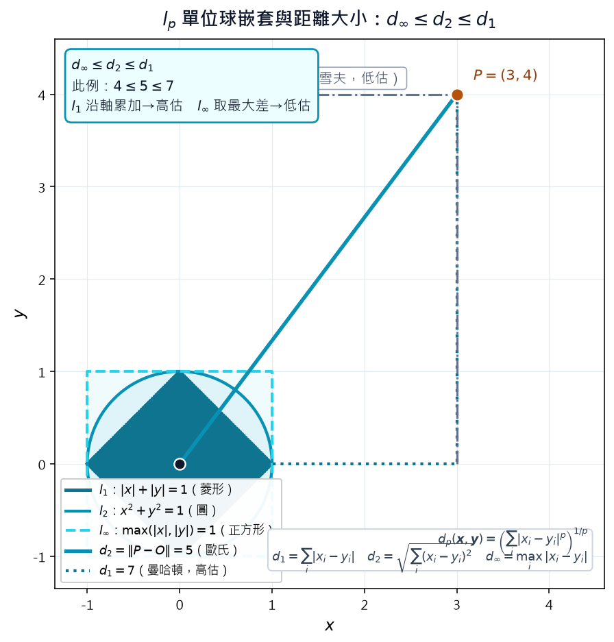
🤖 AI 生圖可用：重繪此示意圖的提示詞（結構化）
WHAT: 2D 示意圖：$l_p$ 單位球（$p=1$ 菱形、$p=2$ 圓、$p=\infty$ 正方形）三條邊界套在一起對比；原點 $O$ 到固定點 $P$ 標出 $d_1$、$d_2$、$d_\infty$ 三種距離，並寫 $d_\infty \le d_2 \le d_1$。附 $l_1$／$l_2$／$l_\infty$ 的 mathtext 公式。 WHY: 遮住文字仍看得出反直覺：同一對點，$l_1$ 沿座標軸累加會「高估」、$l_\infty$ 只看最大差會「低估」歐氏 $l_2$；單位球形狀也隨 $p$ 改變（菱形 ⊂ 圓 ⊂ 正方形）。 MUST show: 1. 三條單位球邊界同心嵌套：$l_1$ 菱形、$l_2$ 圓、$l_\infty$ 正方形。 2. 原點 $O$ 與一個固定點 $P$，分別標 $d_1$、$d_2$、$d_\infty$ 數值（例 $P=(3,4)$ 得 $7$、$5$、$4$）。 3. 不等式 $d_\infty \le d_2 \le d_1$ 用 mathtext 標在圖上。 4. 註明 $l_1$ 高估、$l_\infty$ 低估 $l_2$。 5. 公式用 mathtext：$...$。 AVOID: 只畫一條圓而不對比三種 $p$；三條邊界分開畫在不同子圖；不標距離數值；名詞連連看流程圖。 STYLE: scientific plot, white background；中文標註＋ mathtext；主色接近 cyan #0891b2；PNG dpi=140、寬度 ≤1100px。
一句話
實值向量最常用的相異度是加權 $l_p$ 族：$l_1$（曼哈頓）、$l_2$（歐氏）、$l_\infty$（切比雪夫）是特例；還有矩陣加權的 (11.15) 與依全資料縮放的 $d_G$、$d_Q$。
是什麼
加權 $l_p$ metric（式 11.14）：
$$ \begin{equation*} d_{p}(\boldsymbol{x}, \boldsymbol{y})=\left(\sum_{i=1}^{l} w_{i}\left|x_{i}-y_{i}\right|^{p}\right)^{1 / p} \tag{11.14} \end{equation*} $$
$x_i, y_i$ 是第 $i$ 維座標，$w_i \geq 0$ 是權重。若全設 $w_i=1$，得未加權 $l_p$；$p=2$ 即 Example 11.2 的歐氏距離。
矩陣加權歐氏（式 11.15）： $B$ 為對稱正定矩陣時
$$ \begin{equation*} d(\boldsymbol{x}, \boldsymbol{y})=\sqrt{(\boldsymbol{x}-\boldsymbol{y})^{T} B(\boldsymbol{x}-\boldsymbol{y})} \tag{11.15} \end{equation*} $$
含 Mahalanobis 距離特例，也是 metric DM。
曼哈頓距離 $l_1$（式 11.16）：
$$ \begin{equation*} d_{1}(\boldsymbol{x}, \boldsymbol{y})=\sum_{i=1}^{l} w_{i}\left|x_{i}-y_{i}\right| \tag{11.16} \end{equation*} $$
切比雪夫距離 $l_\infty$（式 11.17）：
$$ \begin{equation*} d_{\infty}(\boldsymbol{x}, \boldsymbol{y})=\max _{1 \leq i \leq l} w_{i}\left|x_{i}-y_{i}\right| \tag{11.17} \end{equation*} $$
$l_1$ 可視為對 $l_2$ 的高估，$l_\infty$ 為低估。Problem 11.6 結論（不必證）：
$$ d_{\infty}(\boldsymbol{x}, \boldsymbol{y}) \leq d_{2}(\boldsymbol{x}, \boldsymbol{y}) \leq d_{1}(\boldsymbol{x}, \boldsymbol{y}) $$
當 $l=1$ 時，所有 $l_p$ norm 相同。
對應 SM 可取 $s_p(\boldsymbol{x}, \boldsymbol{y})=b_{\max}-d_p(\boldsymbol{x}, \boldsymbol{y})$。
其他 DM：
$$ \begin{equation*} d_{G}(\boldsymbol{x}, \boldsymbol{y})=-\log _{10}\left(1-\frac{1}{l} \sum_{j=1}^{l} \frac{\left|x_{j}-y_{j}\right|}{b_{j}-a_{j}}\right) \tag{11.18} \end{equation*} $$
$a_j, b_j$ 是第 $j$ 特徵在資料集 $X$ 中的最小、最大值；$d_G$ 是 metric，但值依整個 $X$ 而定——同一對向量換資料集，$d_G$ 可能不同。
$$ \begin{equation*} d_{Q}(\boldsymbol{x}, \boldsymbol{y})=\sqrt{\frac{1}{l} \sum_{j=1}^{l}\left(\frac{x_{j}-y_{j}}{x_{j}+y_{j}}\right)^{2}} \tag{11.19} \end{equation*} $$
（Canberra 類）適合分量尺度差異大、或需相對差異的場合。
Example 11.4： $\boldsymbol{x}=[0,1,2]^T$，$\boldsymbol{y}=[4,3,2]^T$，$w_i=1$：
- $d_1=6$，$d_2=2\sqrt{5}$，$d_\infty=4$
- 驗證 $d_\infty < d_2 < d_1$：$4 < 2\sqrt{5} \approx 4.47 < 6$
- 若 $X$ 各特徵 max 為 $[10,12,13]$、min 為 $[0,0.5,1]$，則 $d_G=0.0922$
- 若 max 改 $[20,22,23]$、min 改 $[-10,-9.5,-9]$，則 $d_G=0.0295$（同一對向量，不同 $X$ 結果不同）
- $d_Q=0.6455$
為什麼
- $p$ 選擇影響幾何： $l_1$ 沿座標軸累加（城市街区距離），$l_2$ 直線最短，$l_\infty$ 只看最差那一維——高維離群點時 $l_\infty$ 較穩。
- (11.15) 處理相關特徵： $B$ 可編碼特徵間協方差，Mahalanobis 比裸歐氏更適合橢圓形分布。
- $d_G$ 做特徵縮放： 用 $b_j-a_j$ 正規化，避免某維量綱過大主導距離。
怎麼用 / 怎麼記
- 三距離口訣： $l_1$=加總、$l_2$=開根平方和、$l_\infty$=取最大差。
- 大小關係： $d_\infty \leq d_2 \leq d_1$（同一對向量、同一組權重下）。
- 選 $p$： 一般聚類用 $l_2$；稀疏高維或要 robust 可試 $l_1$；只關心最壞維度用 $l_\infty$。
Example 11.4 中 $\boldsymbol{x}=[0,1,2]^T$、$\boldsymbol{y}=[4,3,2]^T$（$w_i=1$），$d_1$、$d_2$、$d_\infty$ 依序為何？
對同一對向量，$l_p$ 距離之間的普遍大小關係為何？
實值向量的相似度：cosine、Pearson、Tanimoto
▼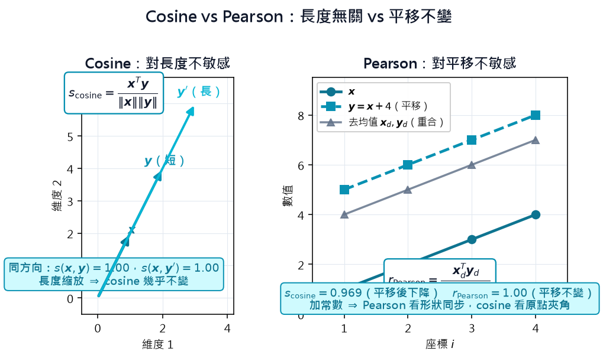
🤖 AI 生圖可用：重繪此示意圖的提示詞（結構化）
WHAT: 雙面板對比圖：左＝cosine（同方向、不同長度 → $s_{\cosine}$ 幾乎相同）；右＝Pearson（整體平移後 → $r_{\text{Pearson}}$ 仍高、但 cosine 會變）。標 $s_{\cosine}=\frac{x^T y}{\|x\|\|y\|}$ 與 $r_{\text{Pearson}}$ 公式及數值。
WHY: 遮住文字仍看得出反直覺：長度縮放不改 cosine；兩向量同加常數（平移）Pearson 不變、cosine 會降——兩者「對什麼不變」不同。
MUST show:
1. 左面板：兩組同方向向量（長度不同），標 cosine ≈ 1.00，強調「長度無關」。
2. 右面板：平移後的兩向量（形狀同步但整體偏移），標 Pearson = 1.00 且 cosine < 1，強調「平移不變 vs 平移敏感」。
3. 箭頭／向量從原點或適當基準畫出，有視覺對比而非只有兩個箭頭。
4. 兩公式 mathtext：$s_{\cosine}$ 與 $r_{\text{Pearson}}$。
5. 各面板標具體數值。
AVOID: 只畫兩個箭頭沒有對比；只講 cosine 不講 Pearson；兩面板內容相同；名詞連連看。
STYLE: scientific plot, white background；中文短標＋ mathtext；主色接近 cyan #0891b2；PNG dpi=140、寬度 ≤1100px。一句話
實值向量常用 SM 看「方向是否一致」：cosine 對向量長度不敏感；Pearson 對平移（整體加減常數）不敏感；Tanimoto 與 $s_c$ 則把相似度跟歐氏距離掛鉤。
是什麼
內積： $s_{\text{inner}}(\boldsymbol{x}, \boldsymbol{y})=\boldsymbol{x}^{T}\boldsymbol{y}=\sum_{i=1}^{l} x_i y_i$。向量常先正規化到同長 $a$，此時值域 $[-a^2,+a^2]$，只反映夾角。對應 DM：$d_{\text{inner}}=b_{\max}-s_{\text{inner}}$。
Cosine 相似度（式 11.20）：
$$ \begin{equation*} s_{\text {cosine }}(\boldsymbol{x}, \boldsymbol{y})=\frac{\boldsymbol{x}^{T} \boldsymbol{y}}{\|\boldsymbol{x}\|\|\boldsymbol{y}\|} \tag{11.20} \end{equation*} $$
$\|\boldsymbol{x}\|=\sqrt{\sum_i x_i^2}$。對旋轉不變，但不對一般線性變換不變——長度被除掉，所以對向量長度（尺度）不敏感：同方向不同長度，cosine 相同。
Pearson 相關係數（式 11.21）： 先減均值得差分向量 $\boldsymbol{x}_d, \boldsymbol{y}_d$：
$$ \begin{equation*} r_{\text {Pearson }}(\boldsymbol{x}, \boldsymbol{y})=\frac{\boldsymbol{x}_{d}^{T} \boldsymbol{y}_{d}}{\left\|\boldsymbol{x}_{d}\right\|\left\|\boldsymbol{y}_{d}\right\|} \tag{11.21} \end{equation*} $$
其中 $\boldsymbol{x}_{d}=[x_1-\bar{x},\ldots,x_l-\bar{x}]^T$，$\bar{x}=\frac{1}{l}\sum_i x_i$（$\boldsymbol{y}_d$ 同理）。值域 $[-1,+1]$。與內積的差別：Pearson 看的是去均值後的方向，故對平移不敏感（兩向量同加常數，Pearson 不變）。
對應相異度（式 11.22）：
$$ \begin{equation*} D(\boldsymbol{x}, \boldsymbol{y})=\frac{1-r_{\text {Pearson }}(\boldsymbol{x}, \boldsymbol{y})}{2} \tag{11.22} \end{equation*} $$
值域 $[0,1]$，曾用於基因表達資料分析。
Tanimoto 相似度（式 11.23）：
$$ \begin{equation*} s_{T}(\boldsymbol{x}, \boldsymbol{y})=\frac{\boldsymbol{x}^{T} \boldsymbol{y}}{\|\boldsymbol{x}\|^{2}+\|\boldsymbol{y}\|^{2}-\boldsymbol{x}^{T} \boldsymbol{y}} \tag{11.23} \end{equation*} $$
連續、離散向量皆可。代數變形後與 $\|\boldsymbol{x}-\boldsymbol{y}\|^2$ 及內積（相關性）有關——距離小且內積大時 $s_T$ 較大。向量正規化到同長 $a$ 時，$s_T$ 與 $a^2/\boldsymbol{x}^T\boldsymbol{y}$ 成反比：越相關，$s_T$ 越大。
相似度 $s_c$（式 11.24）：
$$ \begin{equation*} s_{c}(\boldsymbol{x}, \boldsymbol{y})=1-\frac{d_{2}(\boldsymbol{x}, \boldsymbol{y})}{\|\boldsymbol{x}\|+\|\boldsymbol{y}\|} \tag{11.24} \end{equation*} $$
$\boldsymbol{x}=\boldsymbol{y}$ 時取最大值 1；$\boldsymbol{x}=-\boldsymbol{y}$ 時取最小值 0。
為什麼
- Cosine vs 歐氏： 文本、基因表達等「方向比絕對大小重要」時，cosine 比 raw 歐氏距離更合理。
- Pearson vs Cosine： 資料有共同基線偏移時（例如兩基因表達曲線形狀像但整體高一截），Pearson 去均值後比 cosine 更公平。
- Tanimoto / $s_c$： 把相似度與 $l_2$ 距離橋接，方便在「要 SM 的演算法」裡沿用幾何距離直覺。
怎麼用 / 怎麼記
- Cosine： 先想「夾角」——長度無關；公式 = 內積 / (兩模長乘積)。
- Pearson： 先各維減平均 → 再算 cosine；記「平移不變、看形狀是否同步起伏」。
- 選哪個： 關心方向且已正規化 → cosine；關心趨勢同步但可能有 offset → Pearson；要 SM 又熟悉 $l_2$ → Tanimoto 或 $s_c$。
Cosine 相似度 $s_{\text{cosine}}$ 與 Pearson 係數 $r_{\text{Pearson}}$ 的主要差異為何？
依式 (11.22)，若 $r_{\text{Pearson}}=1$，則 $D(\boldsymbol{x},\boldsymbol{y})$ 為何？
離散向量：Hamming 距離與 Tanimoto
▼一句話
離散特徵向量可看成 $l$ 維格子上的頂點；先數座標對 $(i,j)$ 出現幾次做成列聯表 $A(\boldsymbol{x},\boldsymbol{y})$，Hamming 數「不同幾格」，Tanimoto 數「共同非零特徵占全部非零特徵的比例」。
是什麼：格子頂點與列聯表
若每個座標只取 $F=\{0,1,\ldots,k-1\}$ 中的值，共有 $k^{l}$ 種向量，可想像成 $l$ 維格子上的頂點（Fig 11.4）。$k=2$ 時格子收成 $l$ 維單位超立方體 $H_{l}$。
給兩向量 $\boldsymbol{x},\boldsymbol{y}\in F^{l}$，定義 $k\times k$ 列聯表（contingency table）：
$$ \begin{equation*} A(\boldsymbol{x},\boldsymbol{y})=[a_{ij}] \quad i,j=0,1,\ldots,k-1 \tag{11.25} \end{equation*} $$
其中 $a_{ij}$ = 第一個向量在第 $i$ 個符號、第二個向量在對應位置是第 $j$ 個符號的「座標對 $(i,j)$ 出現次數」。例如 $l=6,k=3$，$\boldsymbol{x}=[0,1,2,1,2,1]^{T}$、$\boldsymbol{y}=[1,0,2,1,0,1]^{T}$，則
$$ A(\boldsymbol{x},\boldsymbol{y})=\begin{bmatrix}0&1&0\\1&2&0\\1&0&1\end{bmatrix} $$
且 $\sum_{i,j}a_{ij}=l$。多數離散向量近接度都可由 $A$ 的元素組合而成。
Fig 11.5（原文無獨立圖檔）：把 $A$ 想成以 $(i,j)$ 為列、行的表格，Tanimoto 只計入「非 $(0,0)$ 對角」那類座標對——$(0,0)$ 代表兩邊都沒有該特徵，權重較低。
為什麼：Hamming 與 Tanimoto 各管什麼
Hamming 距離（不相似度）：兩向量「有幾格不同」——就是 $A$ 所有非對角元素之和：
$$ \begin{equation*} d_{H}(\boldsymbol{x},\boldsymbol{y})=\sum_{i=0}^{k-1}\sum_{j=0,j\neq i}^{k-1} a_{ij} \tag{11.26} \end{equation*} $$
$k=2$（二元）時可化簡為
$$ \begin{equation*} d_{H}(\boldsymbol{x},\boldsymbol{y})=\sum_{i=1}^{l}(x_{i}+y_{i}-2x_{i}y_{i})=\sum_{i=1}^{l}(x_{i}-y_{i})^{2} \tag{11.27} \end{equation*} $$
若改用 bipolar 向量 $F_{1}=\{-1,1\}$，則
$$ \begin{equation*} d_{H}(\boldsymbol{x},\boldsymbol{y})=0.5\left(l-\sum_{i=1}^{l}x_{i}y_{i}\right) \tag{11.28} \end{equation*} $$
對應相似度 $s_{H}=b_{\max}-d_{H}$。離散向量也可直接用 $l_{1}$ 距離：
$$ \begin{equation*} d_{1}(\boldsymbol{x},\boldsymbol{y})=\sum_{i=1}^{l}|x_{i}-y_{i}| \tag{11.29} \end{equation*} $$
二元向量時 $l_{1}$ 與 Hamming 一致。
Tanimoto 相似度借鑑集合交集/聯集比。令 $n_{\boldsymbol{x}}$ = $\boldsymbol{x}$ 非零座標數、$n_{\boldsymbol{y}}$ = $\boldsymbol{y}$ 非零座標數，則
$$ \begin{equation*} s_{T}(\boldsymbol{x},\boldsymbol{y})=\frac{\sum_{i=1}^{k-1}a_{ii}}{n_{\boldsymbol{x}}+n_{\boldsymbol{y}}-\sum_{i=1}^{k-1}\sum_{j=1}^{k-1}a_{ij}} \tag{11.30} \end{equation*} $$
$k=2$ 時簡化為 $s_{T}=a_{11}/(a_{11}+a_{01}+a_{10})$（式 11.31）。
一致率還有幾種變體：只算「一致且非 0」的 $\sum a_{ii}/l$ 或 $\sum a_{ii}/(l-a_{00})$（式 11.32）；或算「全部一致格」的 $\sum a_{ii}/l$（式 11.33）。
補一句：動態相似度（如 Edit distance）用於兩字串長度不同、需對齊比對時；本章固定維度 $l$ 的測度無法直接處理，帶過即可。
怎麼用 / 怎麼記
- 口訣：「先數 $A$，Hamming 數對角外，Tanimoto 數共同非零」。
- 二元向量：Hamming = 不同位元數 = $l_{1}$ 距離。
- Tanimoto 忽略 $(0,0)$ 對，適合「有沒有這個特徵」比「都沒有」更重要的情况。
- 列聯表加總必等於 $l$，拿來自檢計算有沒有漏格。
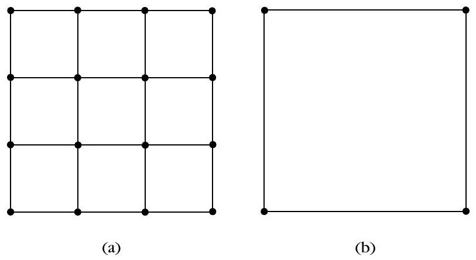
長度 $l=6$，點擊位元切換 0/1
對 $l=6,k=3$，$\boldsymbol{x}=[0,1,2,1,2,1]^{T}$、$\boldsymbol{y}=[1,0,2,1,0,1]^{T}$，Hamming 距離 $d_{H}(\boldsymbol{x},\boldsymbol{y})$ 等於多少？
二元向量時，下列哪個敘述正確？
混合型特徵與 Gower 係數
▼一句話
實值、名義、二元、序數混在同一條向量時，與其硬轉型，不如用 Gower 係數：每一維各自算相似度 $s_q$，加權平均；實值維優先考慮 $l_{1}$ 距離。
是什麼：混用時怎麼量
實務上常見「有些維是連續數、有些是名義/二元/序數」。樸素做法：直接當實值向量，用 $l_{1}$ 或 $l_{2}$ 距離——離散維可以準確比，反過來把實值硬離散化往往失真。
Example 11.5：$\boldsymbol{x}=[4,1,0.8]^{T}$、$\boldsymbol{y}=[1,0,0.4]^{T}$，
- $d_{1}(\boldsymbol{x},\boldsymbol{y})=|4-1|+|1-0|+|0.8-0.4|=3+1+0.4=\mathbf{4.4}$
- $d_{2}(\boldsymbol{x},\boldsymbol{y})=\sqrt{9+1+0.16}=\mathbf{3.187}$
$l_{2}$ 幾乎被第一維差 3 主導；$l_{1}$ 各維貢獻較均衡——混型資料更適合 $l_{1}$。
另一招是把實值區間切 $k$ 段離散化，再用上一節離散測度；或依 Gower [Gowe 71] 的混合相似度：
$$ \begin{equation*} s(\boldsymbol{x}_{i},\boldsymbol{x}_{j})=\frac{\sum_{q=1}^{l}s_{q}(\boldsymbol{x}_{i},\boldsymbol{x}_{j})}{\sum_{q=1}^{l}w_{q}} \tag{11.34} \end{equation*} $$
規則：
- 第 $q$ 維任一向量缺值 → $w_{q}=0$；二元且兩邊都是 0 → $w_{q}=0$；其餘 $w_{q}=1$。
- 二元維（式 11.35）：兩邊都是 1 → $s_{q}=1$，否則 0。
- 名義/序數維：值相同 → $s_{q}=1$，否則 0。
- 區間或比率維（式 11.36）：$s_{q}=1-|x_{iq}-x_{jq}|/r_{q}$，$r_{q}$ 為該維在資料中的全距；完全相同得 1，差滿全距得 0。
為什麼：Example 11.6 公司表
四家公司的 5 維向量（前 3 維：百萬美元預算；第 4 維：海外活動 0/1；第 5 維：員工規模 0/1/2）：
- $\boldsymbol{x}_{1}=[1.2,\,1.5,\,1.9,\,0,\,1]^{T}$
- $\boldsymbol{x}_{2}=[0.3,\,0.4,\,0.6,\,0,\,0]^{T}$
- $\boldsymbol{x}_{3}=[10,\,13,\,15,\,1,\,2]^{T}$
- $\boldsymbol{x}_{4}=[6,\,6,\,7,\,1,\,1]^{T}$
比率維全距：$r_{1}=\mathbf{9.7}$、$r_{2}=\mathbf{12.6}$、$r_{3}=\mathbf{14.4}$。
$s(\boldsymbol{x}_{1},\boldsymbol{x}_{2})$ 各維：
- $s_{1}=1-|1.2-0.3|/9.7=\mathbf{0.9072}$
- $s_{2}=1-|1.5-0.4|/12.6=\mathbf{0.9127}$
- $s_{3}=1-|1.9-0.6|/14.4=\mathbf{0.9097}$
- $s_{4}=\mathbf{0}$（兩邊海外活動都是 0，$w_{4}=\mathbf{0}$ 不計入）
- $s_{5}=\mathbf{0}$（員工規模 1 vs 0）
故 $s(\boldsymbol{x}_{1},\boldsymbol{x}_{2})=(0.9072+0.9127+0.9097+0+0)/(1+1+1+0+1)=\mathbf{0.6824}$。
其餘（原文）：$s(\boldsymbol{x}_{1},\boldsymbol{x}_{3})=\mathbf{0.0541}$，$s(\boldsymbol{x}_{1},\boldsymbol{x}_{4})=\mathbf{0.5588}$，$s(\boldsymbol{x}_{2},\boldsymbol{x}_{3})=\mathbf{0}$，$s(\boldsymbol{x}_{2},\boldsymbol{x}_{4})=\mathbf{0.3047}$，$s(\boldsymbol{x}_{3},\boldsymbol{x}_{4})=\mathbf{0.4953}$。
怎麼用 / 怎麼記
- 混型資料：優先 $l_{1}$ 或 Gower，別把實值硬當名義。
- Gower 口訣：「逐維算 $s_q$，權重 $w_q$，缺值或雙 0 二元不算」。
- 比率/區間維：差 0 → 1，差滿 $r_q$ → 0，中間線性插值。
- 第 4 維「兩邊都是 0」時 $w_4=0$ 是常考陷阱——不是 $s_4=1$！
Example 11.6 中 $s(\boldsymbol{x}_{1},\boldsymbol{x}_{2})$ 的正確值是？
Gower 係數中，第 $q$ 維為二元變數且 $\boldsymbol{x}_{i}$、$\boldsymbol{x}_{j}$ 在該維都是 0 時，$w_q$ 應設為？
模糊測度：靠近超立方中心就不像自己
▼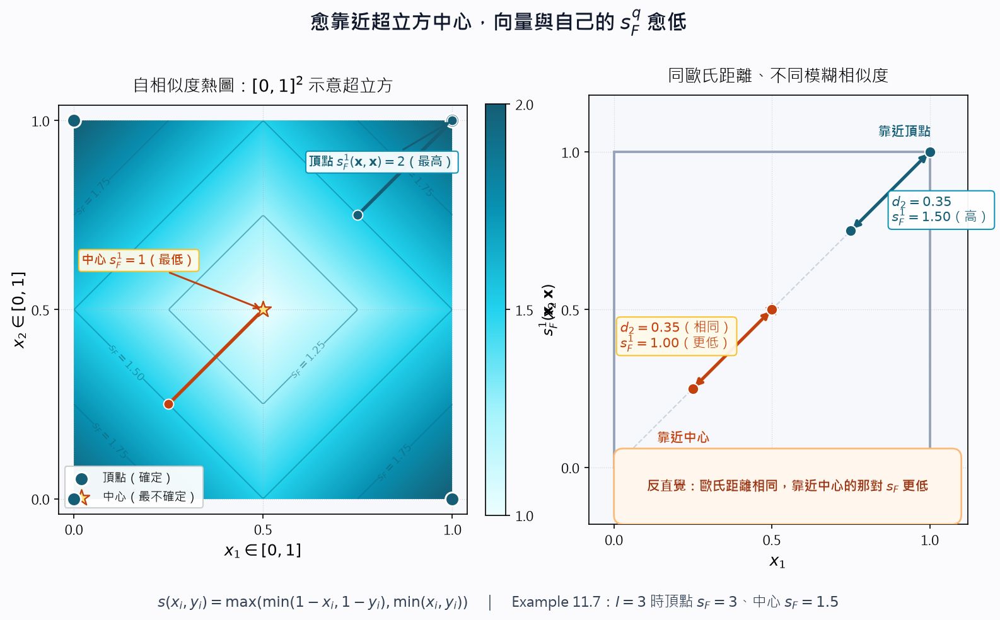
🤖 AI 生圖可用：重繪此示意圖的提示詞（結構化）
WHAT: 製作一張「模糊自相似度隨超立方位置改變」的教育示意圖（Example 11.7 精神）。以 2D 正方形 [0,1]^2 示意超立方 H_l：左圖用熱圖畫出自相似度 s_F^1(x,x)，愈靠近中心 (0.5,0.5) 顏色愈淺、數值愈低，四個頂點最高；右圖並排兩對歐氏距離相同的點（靠近頂點的 (0.75,0.75)–(1,1) vs 靠近中心的 (0.25,0.25)–(0.5,0.5)），標出靠近中心的那對 s_F 更低。標公式 s(x_i,y_i)=max(min(1-x_i,1-y_i),min(x_i,y_i)) 與 s_F^q。 WHY: 讀者需看見反直覺：模糊測度不只看兩點相對位置，還看它們離超立方中心有多近。向量愈靠近中心愈不確定，連跟自己比相似度都會變低；歐氏距離相同的兩對點，靠近中心的那對模糊相似度更低。這與「自己跟自己永遠最像」的日常直覺相反。 MUST show: [0,1]^2 正方形；中心 vs 四頂點的自相似度對比（頂點高、中心低）；熱圖或等值線呈現位置效應；兩對等長歐氏線段及對應 s_F 數值（高 vs 低）；公式 s(x_i,y_i) 或 s_F^q；中文標題說明「愈靠近中心，與自己的 s_F 愈低」。可加註 l=3 時頂點 s_F=3、中心 s_F=1.5。 AVOID: 只畫一個模糊集合／隸屬度曲線而沒有「位置效應」；不要讓中心與頂點看起來自相似度相同；不要省略等歐氏距離那兩對的對比；不要改 index.html 或做 integrate。 STYLE: matplotlib PNG，中文字型 msjh.ttc；配色 cyan #0891b2 / #155e75；背景淺灰白 #f7f8fc；dpi 150；公式用 mathtext dejavusans。
一句話
特徵值在 $[0,1]$ 表示「擁有該特徵的程度」；用 min/max/$1-x$ 推廣二元邏輯後，向量越靠近超立方中心 $(1/2,\ldots,1/2)$ 越不確定——連跟自己比，相似度都會變低，這跟歐氏距離的直覺相反。
是什麼：從二元邏輯到模糊相似度
座標 $x_{i}\in[0,1]$：越接近 1 越「有」第 $i$ 個特徵，越接近 0 越「沒有」；$x_{i}=1/2$ 代表完全沒線索。這是二元邏輯（只有 0/1）的推廣。
兩個二元變數 $a,b$ 的等價關係：
$$ \begin{equation*} (a\equiv b)=((\mathrm{NOT}\,a)\,\mathrm{AND}\,(\mathrm{NOT}\,b))\;\mathrm{OR}\;(a\,\mathrm{AND}\,b) \tag{11.38} \end{equation*} $$
在模糊邏輯裡：AND → $\min$，OR → $\max$，NOT $a$ → $1-a$。兩個純量 $x_{i},y_{i}\in[0,1]$ 的相似度：
$$ \begin{equation*} s(x_{i},y_{i})=\max\bigl(\min(1-x_{i},1-y_{i}),\,\min(x_{i},y_{i})\bigr) \tag{11.39} \end{equation*} $$
向量在 $l$ 維超立方 $H_{l}$ 上，靠近中心不確定性最大，靠近頂點最確定。向量相似度（式 11.40）：
$$ \begin{equation*} s_{F}^{q}(\boldsymbol{x},\boldsymbol{y})=\left(\sum_{i=1}^{l}s(x_{i},y_{i})^{q}\right)^{1/q} \tag{11.40} \end{equation*} $$
$s_{F}$ 最大 $l^{1/q}$、最小 $0.5\,l^{1/q}$；$q\to\infty$ 取各維 $s$ 的最大值；$q=1$ 時就是各維直接相加。
為什麼：Example 11.7 的反直覺重點
設 $l=\mathbf{3}$、$q=\mathbf{1}$，$s_{F}^{1}$ 最大可達 $\mathbf{3}$。四個向量：
- $\boldsymbol{x}_{1}=[1,1,1]^{T}$，$\boldsymbol{x}_{2}=[0,0,1]^{T}$（頂點，確定）
- $\boldsymbol{x}_{3}=[1/2,1/3,1/4]^{T}$，$\boldsymbol{x}_{4}=[1/2,1/2,1/2]^{T}$（靠近中心，不確定）
向量與自己的相似度（越靠近中心越低！）：
- $s_{F}^{1}(\boldsymbol{x}_{1},\boldsymbol{x}_{1})=\mathbf{3}$
- $s_{F}^{1}(\boldsymbol{x}_{2},\boldsymbol{x}_{2})=\mathbf{3}$
- $s_{F}^{1}(\boldsymbol{x}_{3},\boldsymbol{x}_{3})=\mathbf{1.92}$
- $s_{F}^{1}(\boldsymbol{x}_{4},\boldsymbol{x}_{4})=\mathbf{1.5}$（中心最低）
再看兩對向量：
- $\boldsymbol{y}_{1}=[3/4,3/4,3/4]^{T}$，$\boldsymbol{y}_{2}=[1,1,1]^{T}$
- $\boldsymbol{y}_{3}=[1/4,1/4,1/4]^{T}$，$\boldsymbol{y}_{4}=[1/2,1/2,1/2]^{T}$
歐氏距離 $d_{2}(\boldsymbol{y}_{1},\boldsymbol{y}_{2})=d_{2}(\boldsymbol{y}_{3},\boldsymbol{y}_{4})$（兩對「差向量」長度相同），但模糊相似度 $s_{F}^{1}(\boldsymbol{y}_{1},\boldsymbol{y}_{2})=\mathbf{2.25}$ 大於 $s_{F}^{1}(\boldsymbol{y}_{3},\boldsymbol{y}_{4})=\mathbf{1.5}$。靠近頂點的向量對反而更相似；靠近中心的對反而更不相似——$s_{F}^{q}$ 同時受「相對位置」與「離中心遠近」影響。
怎麼用 / 怎麼記
- 口訣：「中心最糊塗，頂點最清楚；跟自己比，中心分最低」。
- 單維公式：$s=\max(\min(1-x,1-y),\min(x,y))$——兩邊都確定（都近 0 或都近 1）才高。
- $q=1$ 時直接加；別用歐氏距離直覺套模糊測度。
- Example 11.7 是考試愛考：同歐氏距離 ≠ 同模糊相似度。
Example 11.7（$l=3,q=1$）中，$s_{F}^{1}(\boldsymbol{x}_{4},\boldsymbol{x}_{4})$ 等於多少？（$\boldsymbol{x}_{4}=[1/2,1/2,1/2]^{T}$）
Example 11.7 中 $d_{2}(\boldsymbol{y}_{1},\boldsymbol{y}_{2})=d_{2}(\boldsymbol{y}_{3},\boldsymbol{y}_{4})$，但模糊相似度 $s_{F}^{1}(\boldsymbol{y}_{1},\boldsymbol{y}_{2})$ 與 $s_{F}^{1}(\boldsymbol{y}_{3},\boldsymbol{y}_{4})$ 的關係是？
缺值的四種處理
▼🤖 AI 生圖可用：重繪此示意圖的提示詞（結構化）
WHAT: 製作一張「缺值第三招把距離放大」的左右對照示意圖。左欄：完整 2 維，兩點座標都有值，把各維差相加（權重 ×1）。右欄：兩點缺一維（標 *），只剩可用維的差，再乘 l/(l−#缺)=×2，使結果走滿與左欄相同的允許區間。用區間長條對照「不放大則走不滿 / 放大後走滿」。 WHY: 讓讀者即使遮住文字也能看出因果：缺維之後若只加總可用差，測度的動態範圍會變窄；第三招用 l/(l−#缺) 把剩下的差拉回完整尺度。反直覺是：缺愈多，剩下那一維的權重愈大（l=2 缺 1 → ×2；l=3 缺 2 → ×3）。 MUST show: 左「完整 2 維」幾何路徑（兩段差都算）與走滿區間的長條；右「缺 1 維」只畫可用軸上的差、缺值以 * 或虛線表示；明顯的 ×2 放大標記；不放大的半截長條（走不滿）對比放大後走滿的長條；註解「缺愈多，剩下那維權重愈大」。可用「×2」這類 Unicode。 AVOID: 公式字串使用 $（LaTeX 錢號）；class="card"（改用 svg-panel）；只寫四招文字清單而不畫放大；讓缺維後的距離看起來比完整時更短卻沒有縮放；外鏈字體。 STYLE: 離線 inline SVG，viewBox 約 880×500，左右雙欄 svg-panel，系統 sans + 繁中，配色 cyan #0891b2 / #155e75。
一句話
特徵向量缺某一維時，可以丟掉、用該維均值填、只對可用維算距離再縮放、或用該維的平均接近度代替——四招各有取捨，Example 11.8 把後三招的數字算給你看。
是什麼：四種常用策略
量測失敗或紀錄錯誤都可能造成缺值（以 * 表示）。常見四招 [Snea 73, Dixo 79, Jain 88]：
- 丟掉：凡有缺值的向量整筆剔除。缺值少還行；缺太多會改變問題本質。
- 均值填補：第 $i$ 維用所有「有值」樣本在該維的平均代替 *，再用一般近接度。
- 可用維平均再縮放（式 11.41–11.42）：對每對 $\boldsymbol{x},\boldsymbol{y}$ 定義
$$ b_{i}= \begin{cases}0, & \text{若 } x_{i},y_{i} \text{ 都有值}\\ 1, & \text{否則}\end{cases} \tag{11.41} $$ $$ \begin{equation*} \wp(\boldsymbol{x},\boldsymbol{y})=\frac{l}{l-\sum_{i=1}^{l}b_{i}}\sum_{\text{all }i:\,b_{i}=0}\phi(x_{i},y_{i}) \tag{11.42} \end{equation*} $$
只加總「兩邊都有值」的維，再乘以 $l/(l-\sum b_i)$，讓距離仍落在完整 $l$ 維的尺度上。不相似度常取 $\phi(x_i,y_i)=|x_i-y_i|$。
- 缺維用平均接近度（式 11.43）：先算第 $i$ 維在所有樣本間的平均距離 $\phi_{\mathrm{avg}}(i)$；若 $x_i$ 或 $y_i$ 缺值，該維用 $\phi_{\mathrm{avg}}(i)$ 代替，否則用 $\phi(x_i,y_i)$：
$$ \begin{equation*} \wp(\boldsymbol{x},\boldsymbol{y})=\sum_{i=1}^{l}\psi(x_{i},y_{i}) \tag{11.43} \end{equation*} $$
為什麼：Example 11.8 數字核對
$X=\{\boldsymbol{x}_{1},\boldsymbol{x}_{2},\boldsymbol{x}_{3},\boldsymbol{x}_{4},\boldsymbol{x}_{5}\}$，$\boldsymbol{x}_{1}=[0,0]^{T}$，$\boldsymbol{x}_{2}=[1,*]^{T}$，$\boldsymbol{x}_{3}=[0,*]^{T}$，$\boldsymbol{x}_{4}=[2,2]^{T}$，$\boldsymbol{x}_{5}=[3,1]^{T}$。
第二招：第二維可用值為 $0,2,1$，均值 $=(0+2+1)/3=\mathbf{1}$，把 * 都填成 1 後再用一般測度。
第三招（$\phi=|x_i-y_i|$）：
- $d(\boldsymbol{x}_{1},\boldsymbol{x}_{2})$：只有第 1 維可用，$|0-1|=1$，縮放 $2/(2-1)\times1=\mathbf{2}$
- $d(\boldsymbol{x}_{2},\boldsymbol{x}_{3})$：只有第 1 維可用，$|1-0|=1$，同樣得 $\mathbf{2}$
第四招：第二維三對可用距離 $|0-2|=2$、$|0-1|=1$、$|2-1|=1$，平均 $=(2+1+1)/3=\mathbf{4/3}$。
- $d(\boldsymbol{x}_{1},\boldsymbol{x}_{2})$：第 1 維 $|0-1|=1$，第 2 維缺值用 $4/3$，合計 $1+4/3=\mathbf{7/3}$
怎麼用 / 怎麼記
- 口訣：「丟、填、縮放、平均距離——缺值四招由簡到繁」。
- 第三招關鍵：$l/(l-\sum b_i)$ 把「只算可用維」拉回完整尺度。
- 第四招關鍵：缺的那一維不憑空猜，用「大家在这维平均差多少」代替。
- Example 11.8 必記：均值 $=1$；第三招 $d=2$；第四招第二維平均 $=4/3$，$d(\boldsymbol{x}_1,\boldsymbol{x}_2)=7/3$。
Example 11.8 用第三招（式 11.42，$\phi=|x_i-y_i|$）算 $d(\boldsymbol{x}_{1},\boldsymbol{x}_{2})$，結果是？
Example 11.8 用第四招，第二維的平均距離 $\phi_{\mathrm{avg}}(2)$ 與 $d(\boldsymbol{x}_{1},\boldsymbol{x}_{2})$ 分別是？
點對集合：max、min、平均
▼一句話
要把一點 $\boldsymbol{x}$ 派進某個叢集 $C$，得先量 $\boldsymbol{x}$ 跟整團 $C$ 有多近：$\wp(\boldsymbol{x},C)$。一條路是讓 $C$ 裡每個點都投票（max／min／平均），另一條路是先替 $C$ 選一個代表，再量 $\boldsymbol{x}$ 到代表的距離。
是什麼
很多分群演算法在決定「$\boldsymbol{x}$ 該進哪一團」時，看的不是 $\boldsymbol{x}$ 跟某一個鄰居，而是 $\boldsymbol{x}$ 跟整個集合 $C$ 的接近度 $\wp(\boldsymbol{x},C)$。定義這件事有兩個大方向。
第一方向：讓 $C$ 的每一點都進場。 $\wp(\boldsymbol{x},\boldsymbol{y})$ 可以是任何「兩點之間」的接近度（相似度或相異度都行）。三種最典型的寫法是：
- max 接近度：只看 $C$ 裡跟 $\boldsymbol{x}$「最極端」的那一對
$$ \begin{equation*} \wp_{\max}^{ps}(\boldsymbol{x},C)=\max_{\boldsymbol{y}\in C}\wp(\boldsymbol{x},\boldsymbol{y}) \tag{11.44} \end{equation*} $$
- min 接近度：只看最靠近（或最不像，取決於 $\wp$ 是距離還是相似度）的那一對
$$ \begin{equation*} \wp_{\min}^{ps}(\boldsymbol{x},C)=\min_{\boldsymbol{y}\in C}\wp(\boldsymbol{x},\boldsymbol{y}) \tag{11.45} \end{equation*} $$
- 平均接近度：把 $C$ 裡每一點都加進來再除以人數 $n_C$
$$ \begin{equation*} \wp_{\mathrm{avg}}^{ps}(\boldsymbol{x},C)=\frac{1}{n_{C}}\sum_{\boldsymbol{y}\in C}\wp(\boldsymbol{x},\boldsymbol{y}) \tag{11.46} \end{equation*} $$
上標 $ps$ 是 point-to-set（點對集合）的意思。直觀很單純：max 被最遠（或最像）的那一點綁架，min 被最近的那一點綁架，avg 則是整團一起出聲。
Example 11.9（對應原文 Figure 11.6）。令
$$C=\{\boldsymbol{x}_1,\boldsymbol{x}_2,\boldsymbol{x}_3,\boldsymbol{x}_4,\boldsymbol{x}_5,\boldsymbol{x}_6,\boldsymbol{x}_7,\boldsymbol{x}_8\}$$
八個點的座標是
- $\boldsymbol{x}_1=[1.5,1.5]^{T}$，$\boldsymbol{x}_2=[2,1]^{T}$，$\boldsymbol{x}_3=[2.5,1.75]^{T}$，$\boldsymbol{x}_4=[1.5,2]^{T}$
- $\boldsymbol{x}_5=[3,2]^{T}$，$\boldsymbol{x}_6=[1,3.5]^{T}$，$\boldsymbol{x}_7=[2,3]^{T}$，$\boldsymbol{x}_8=[3.5,3]^{T}$
待測點 $\boldsymbol{x}=[6,4]^{T}$，兩點之間用歐氏距離。算完得到：
- $d_{\max}^{ps}(\boldsymbol{x},C)=d(\boldsymbol{x},\boldsymbol{x}_1)=5.15$（最遠的是左下角的 $\boldsymbol{x}_1$）
- $d_{\min}^{ps}(\boldsymbol{x},C)=d(\boldsymbol{x},\boldsymbol{x}_8)=2.69$（最近的是右上角的 $\boldsymbol{x}_8$）
- $d_{\mathrm{avg}}^{ps}(\boldsymbol{x},C)=\dfrac{1}{8}\sum_{i=1}^{8}d(\boldsymbol{x},\boldsymbol{x}_i)=4.33$
同一個 $C$、同一個 $\boldsymbol{x}$，三種函數給出三個完全不同的數字——後面分群結果當然也會跟著變。
第二方向：先替 $C$ 裝一個代表，再量 $\boldsymbol{x}$ 到代表的接近度。 文獻裡最常用的三種代表是：點、超平面、超球面（原文 Figure 11.7）：
- 緊密叢集（像一坨擠在一起的點雲）：用點代表就夠了，代表點大約落在團塊中央。
- 線性／超平面叢集（點沿一條線或一個平面鋪開）：單一點會「站在線段中點」，量不到「貼著這條線」這件事，該用超平面代表。
- 球面／超球面叢集（點沿圓周或球面分布）：該用超球面代表，代表是圓心加半徑，不是圓心那一個點。
為什麼
分群演算法常常反覆問：「這個點該進哪一團？」若只用最近鄰，一顆離群點就能把邊界拉歪；若只用最遠點，又會把整團的直徑當成距離。平均比較穩，但計算量大。換成代表點以後，比較成本從「對 $n_C$ 個點逐一算」降成「對一個代表算一次」，這也是 $k$-means 這類方法跑得動的原因。代表的幾何形狀必須對上叢集的形狀：拿點去代表一條線，等於用錯了尺。
怎麼用 / 怎麼記
口訣：「全團投票看 max／min／avg；嫌人多就改量代表。團塊用點、線狀用平面、圓環用球面。」
- 資料是一坨一坨的：先試點代表，或用 min／avg 當 $\wp(\boldsymbol{x},C)$。
- 資料沿直線、邊緣走：換超平面代表（下一張卡片）。
- 資料沿圓、環走：換超球面代表。
- 同一組數字，max、min、avg 可以差很多（Example 11.9 就是 $5.15$、$2.69$、$4.33$），選函數等於在選分群哲學。
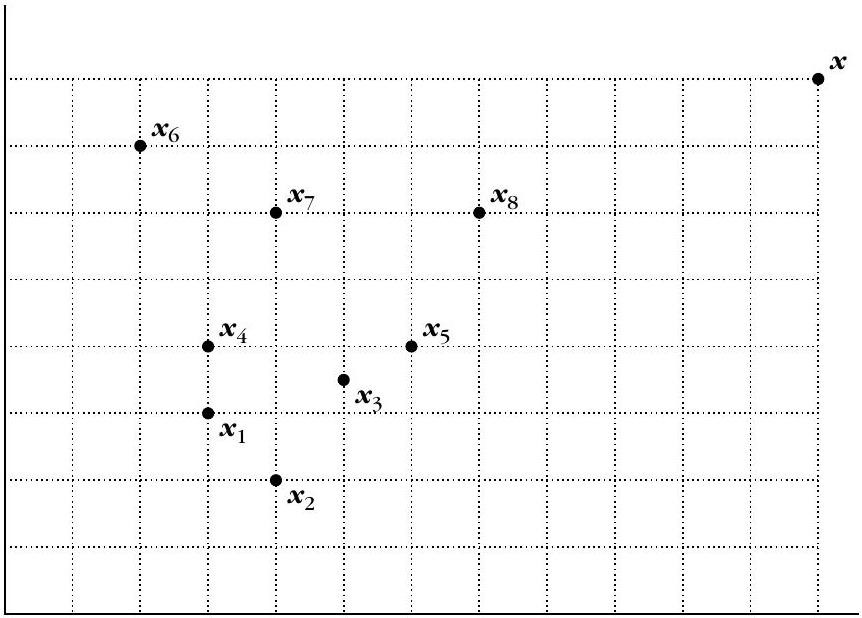
Example 11.9 用歐氏距離量 $\boldsymbol{x}=[6,4]^{T}$ 到八點集合 $C$。三個點對集合距離分別是多少、各對到哪個點？
第二種「點對集合」作法是先替 $C$ 選代表再量接近度。點、超平面、超球面各適合哪種叢集？（對應原文 Figure 11.7）
代表點：均值、mean center、median
▼一句話
要用「一個點」代表整團 $C$，連續空間最常用均值 $\boldsymbol{m}_p$；但離散格子 $F^{l}$ 上均值可能掉到格子外面，這時改用必須活在 $C$ 裡的 mean center $\boldsymbol{m}_c$ 或 median center $\boldsymbol{m}_{\mathrm{med}}$。
是什麼
點代表有三種典型選法。
1. 均值向量（mean point）
$$ \begin{equation*} \boldsymbol{m}_{p}=\frac{1}{n_{C}}\sum_{\boldsymbol{y}\in C}\boldsymbol{y} \tag{11.47} \end{equation*} $$
$n_C$ 是 $C$ 的點數。連續空間裡這是預設選項，也是 $k$-means 的那顆「重心」。麻煩在離散空間 $F^{l}$（例如像素格子、整數座標）：$\boldsymbol{m}_p$ 算出來可能根本不在 $F^{l}$ 上，也就不是一個合法的資料點。
2. mean center（均值中心） $\boldsymbol{m}_c\in C$，必須是 $C$ 裡現成的某一點，定義成「到團裡其他人的相異度總和最小」：
$$ \begin{equation*} \sum_{\boldsymbol{y}\in C}d(\boldsymbol{m}_{c},\boldsymbol{y})\le\sum_{\boldsymbol{y}\in C}d(\boldsymbol{z},\boldsymbol{y}),\qquad\forall\boldsymbol{z}\in C \tag{11.48} \end{equation*} $$
$d$ 是兩點之間的相異度。若改用相似度，不等式方向要反過來（改成總和最大的那一點）。直觀：$\boldsymbol{m}_c$ 是 $C$ 裡的「交通最方便」的那個點，而且保證還站在格子上。
3. median center（中位中心） $\boldsymbol{m}_{\mathrm{med}}\in C$，通常在「兩點接近度根本不是 metric」時使用：
$$ \begin{equation*} \operatorname{med}\bigl(d(\boldsymbol{m}_{\mathrm{med}},\boldsymbol{y})\mid\boldsymbol{y}\in C\bigr)\le\operatorname{med}\bigl(d(\boldsymbol{z},\boldsymbol{y})\mid\boldsymbol{y}\in C\bigr),\qquad\forall\boldsymbol{z}\in C \tag{11.49} \end{equation*} $$
這裡 $\operatorname{med}(T)$ 的定義要記清楚。設 $T$ 有 $q$ 個純量：它是 $T$ 裡「大於或等於剛好 $[(q+1)/2]$ 個元素」的那個最小數字。演算法版更乾脆：
- 把 $T$ 由小到大排好；
- 取出第 $[(q+1)/2]$ 個（這是整數部分，不是四捨五入）。
例如 $q=5$，則 $[(5+1)/2]=3$，所以看排序後的第 3 個數。對 $C$ 裡每一點 $\boldsymbol{x}_i$ 都做一個距離向量 $T_i$（含自己，自己到自己是 $0$），比較各 $\operatorname{med}(T_i)$，最小的那一點就是 median center。
Example 11.10（對應原文 Figure 11.8）。令 $C=\{\boldsymbol{x}_1,\boldsymbol{x}_2,\boldsymbol{x}_3,\boldsymbol{x}_4,\boldsymbol{x}_5\}$，
$$\boldsymbol{x}_1=[1,1]^{T},\;\boldsymbol{x}_2=[3,1]^{T},\;\boldsymbol{x}_3=[1,2]^{T},\;\boldsymbol{x}_4=[1,3]^{T},\;\boldsymbol{x}_5=[3,3]^{T}$$
五點都落在離散格子 $\{0,1,2,\ldots,6\}^{2}$ 上，相異度用歐氏距離。
- 均值 $\boldsymbol{m}_p=[1.8,2]^{T}$：横坐标 $1.8$ 不在整數格子上，$\boldsymbol{m}_p$ 掉到 $C$ 所屬空間的外面。
- 對每個 $\boldsymbol{x}_i$ 把「它到 $C$ 裡其他點的距離」加總，得到 $A_1=7.83$，$A_2=9.06$，$A_3=6.47$，$A_4=7.83$，$A_5=9.06$。最小的是 $A_3$，所以 mean center $=\boldsymbol{x}_3$。
- 再算各點的 $\operatorname{med}(T_i)$：$\operatorname{med}(T_1)=\operatorname{med}(T_2)=2$，$\operatorname{med}(T_3)=1$，$\operatorname{med}(T_4)=\operatorname{med}(T_5)=2$。最小的仍是 $T_3$，所以 median center 也是 $\boldsymbol{x}_3$。
這個例子裡 mean center 跟 median center 碰巧同一個點；一般而言兩者不必相同。
最後拿 $\boldsymbol{x}=[6,4]^{T}$ 量到三種代表的歐氏距離：均值 $4.65$，mean center $5.39$，median center $5.39$。
為什麼
均值好算、好微分，連續空間幾乎是預設。可是「代表必須是一個合法資料點」時（類別特徵、整數格子、圖上的節點），均值會交白卷。mean center 改成「在 $C$ 裡找總距離最小的那一點」，保證答案還在集合裡。median 則對極端值比較不敏感，也適用於非 metric 的接近度——它看的是排序後的中位距離，不是總和，一顆離群點比較掀不翻桌。
怎麼用 / 怎麼記
口訣：「連續用均值；格子外就改 mean center；不是 metric 就改 median。後兩個都必須是 $C$ 裡的點。」
- 連續特徵、歐氏空間：$\boldsymbol{m}_p$，式 (11.47)。
- 離散 $F^{l}$、答案必須是現成樣本：$\boldsymbol{m}_c$，式 (11.48)，記得相似度要把 $\le$ 翻成 $\ge$。
- 接近度不是 metric、或怕離群點：$\boldsymbol{m}_{\mathrm{med}}$，式 (11.49)；$\operatorname{med}(T)$ 是排序後第 $[(q+1)/2]$ 個。
- Example 11.10 速記：$\boldsymbol{m}_p=[1.8,2]^{T}$ 在格子外；$A_i$ 最小是 $6.47\to\boldsymbol{x}_3$；median 也是 $\boldsymbol{x}_3$；到 $[6,4]^{T}$ 的距離是 $4.65$、$5.39$、$5.39$。
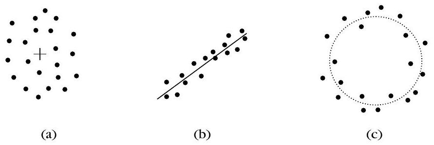
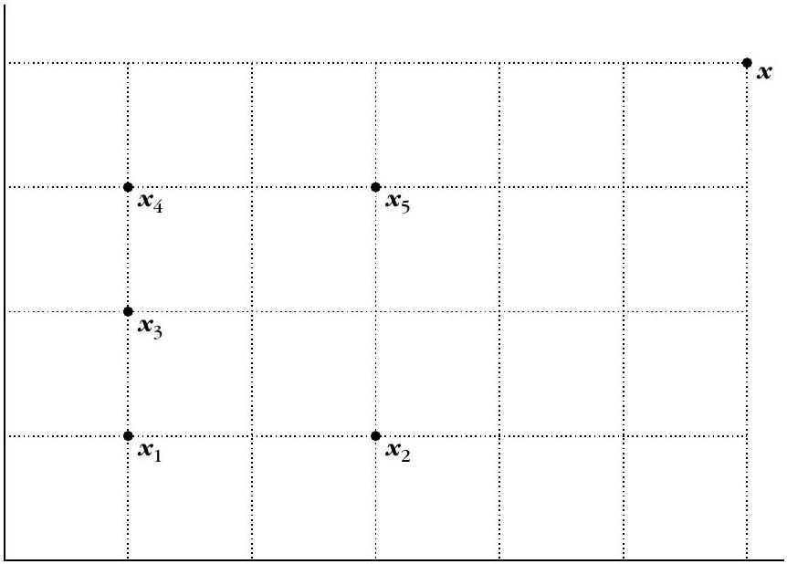
Example 11.10 的五點在離散格子 $\{0,1,\ldots,6\}^{2}$ 上。均值、各點距離總和 $A_i$、以及 mean center 分別是？
關於 median center 與 Example 11.10 最後那段距離，哪句正確？
超平面與超球面代表
▼一句話
線狀叢集不該用一個點去概括，該用超平面 $H:\boldsymbol{a}^{T}\boldsymbol{x}+a_0=0$；圓形叢集該用超球面 $(\boldsymbol{x}-\boldsymbol{c})^{T}(\boldsymbol{x}-\boldsymbol{c})=r^{2}$。點到它們的距離，都定義成「到代表上最近那一點」的距離。
是什麼
超平面代表。 電腦視覺裡常常碰到「沿一條線、一個平面排開」的叢集（邊緣、輪廓、直線結構）。這種形狀沒辦法用單一個點代表——點只記得「大概在哪裡」，忘了「沿著哪個方向延伸」。超平面 $H$ 的一般方程式是
$$ \begin{equation*} \sum_{j=1}^{l}a_{j}x_{j}+a_{0}=\boldsymbol{a}^{T}\boldsymbol{x}+a_{0}=0 \tag{11.50} \end{equation*} $$
其中 $\boldsymbol{x}=[x_1,\ldots,x_l]^{T}$，$\boldsymbol{a}=[a_1,\ldots,a_l]^{T}$ 是 $H$ 的權重向量（法向量方向）。點 $\boldsymbol{x}$ 到平面的距離，定義成它到平面上最近一點的距離：
$$ \begin{equation*} d(\boldsymbol{x},H)=\min_{\boldsymbol{z}\in H}d(\boldsymbol{x},\boldsymbol{z}) \tag{11.51} \end{equation*} $$
若兩點之間用歐氏距離，幾何上這就是「從 $\boldsymbol{x}$ 垂直落到 $H$ 的長度」（原文 Figure 11.9a：點到平面的垂線）。化簡後得到課本公式
$$ \begin{equation*} d(\boldsymbol{x},H)=\frac{\lvert\boldsymbol{a}^{T}\boldsymbol{x}+a_{0}\rvert}{\|\boldsymbol{a}\|} \tag{11.52} \end{equation*} $$
其中 $\|\boldsymbol{a}\|=\sqrt{\sum_{j=1}^{l}a_{j}^{2}}$。分母把法向量長度除掉，所以把 $\boldsymbol{a}$ 乘上常數不會改距離；$\lvert\boldsymbol{a}^{T}\boldsymbol{x}+a_0\rvert$ 則保證距離是非負的。
超球面代表。 另一類常見叢集是圓形（高維就是超球面）——同樣在電腦視覺裡很常出現。理想代表不再是點或平面，而是一個圓（超球面）$Q$：
$$ \begin{equation*} (\boldsymbol{x}-\boldsymbol{c})^{T}(\boldsymbol{x}-\boldsymbol{c})=r^{2} \tag{11.53} \end{equation*} $$
$\boldsymbol{c}$ 是球心，$r$ 是半徑。點 $\boldsymbol{x}$ 到 $Q$ 的距離同樣定義成「到球面上最近一點」：
$$ \begin{equation*} d(\boldsymbol{x},Q)=\min_{\boldsymbol{z}\in Q}d(\boldsymbol{x},\boldsymbol{z}) \tag{11.54} \end{equation*} $$
實務上 (11.54) 裡的 $d(\boldsymbol{x},\boldsymbol{z})$ 多半仍用歐氏距離。幾何圖像（原文 Figure 11.9b）是：從球心 $\boldsymbol{c}$ 對 $\boldsymbol{x}$ 連一條射線，射線與球面的交點就是最近點；距離是 $\bigl\lvert\|\boldsymbol{x}-\boldsymbol{c}\|-r\bigr\rvert$（在球外是到球面的剩餘長度，在球內是「少走了多少才到球面」）。文獻裡也有人改用非幾何的 $d(\boldsymbol{x},Q)$（例如 Dave 1992、Kris 1995、Frigui 1996），那已超出本節的歐氏圖像。
為什麼
代表的維度與自由度必須對上叢集的形狀。點代表只有位置，適合「團塊」；超平面多了法向與偏移，適合「攤成一片／一條」；超球面多了球心與半徑，適合「繞一圈」。用錯代表等於用錯距離：拿均值去代表一個圓環，圓心到環上每點的距離都差不多，你會以為「這團很緊密」，其實點根本不擠在圓心附近。電腦視覺的直線、圓形結構就是這樣被逼著換代表的。
怎麼用 / 怎麼記
口訣：「線用平面、圓用球面；距離永遠是到代表上最近的那一點。歐氏落到平面就變成 $\lvert\boldsymbol{a}^{T}\boldsymbol{x}+a_0\rvert/\|\boldsymbol{a}\|$。」
- 先看資料散佈：團塊 $\to$ 點（上一張）；直線／平面 $\to$ (11.50)+(11.52)；圓／球 $\to$ (11.53)+(11.54)。
- (11.51) 與 (11.54) 是同一個句子換代表：距離 $=$ 到集合（平面或球面）上最近點的距離。
- 歐氏＋平面才有閉式 (11.52)；球面在歐氏下也有沿半徑的閉式，但原文把定義停在 $\min_{\boldsymbol{z}\in Q}$。
- 後面若兩團都用非點代表，再定義「集合對集合」的實用價值不大——下一張幾乎都假設代表是點。
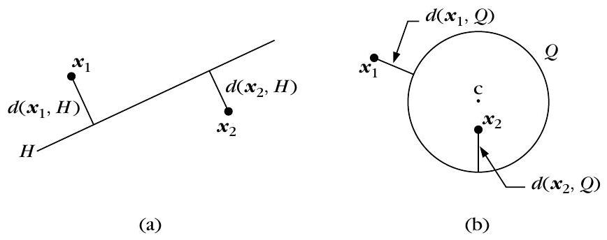
歐氏距離下，點 $\boldsymbol{x}$ 到超平面 $H:\boldsymbol{a}^{T}\boldsymbol{x}+a_0=0$ 的距離公式是哪一個？
超球面代表 $Q:(\boldsymbol{x}-\boldsymbol{c})^{T}(\boldsymbol{x}-\boldsymbol{c})=r^{2}$ 與點到球面的距離，下列哪句符合原文？
集合對集合：max、min、平均、均值、Ward 型
▼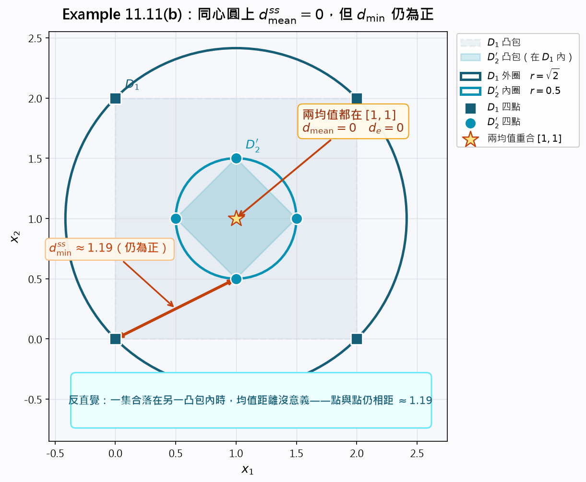
🤖 AI 生圖可用：重繪此示意圖的提示詞（結構化）
WHAT: 製作一張 Example 11.11(b)「同心圓均值距離等於 0」的教育示意圖。D1 四點在外圈（半徑 √2）、D2' 四點在內圈（半徑 0.5），兩圓同心於 [1,1]；兩集合的均值都落在同一點，故 d_mean=0、d_e=0，但最近兩點距離 d_min≈1.19 仍為正。畫出 D1 凸包包住 D2'。 WHY: 讀者需看見反直覺：當一集合落在另一集合的凸包內時，用兩均值的距離沒有意義——均值重合並不代表兩團靠近。min 距離仍為正，說明點與點之間其實隔著一圈空隙。均值距離只適合緊緻、分離良好的團。 MUST show: 兩條同心圓（外 D1、內 D2'）；四個外點與四個內點分別落在對應圓上；中心 [1,1] 標成兩均值重合，並寫 d_mean=0、d_e=0；一條連線標 d_min≈1.19（仍為正）；D2' 在 D1 凸包之內。 AVOID: 兩團分開的 blob／兩個相離群集；不要讓兩個均值畫在不同位置；不要省略 min 距離仍為正的標註；不要只畫圓不畫點；不要改 index.html 或做 integrate。 STYLE: matplotlib PNG，中文字型 msjh.ttc；配色 cyan #0891b2 / #155e75；背景淺灰白 #f7f8fc；dpi 150；座標軸等比例；公式用 mathtext dejavusans。
一句話
兩團 $D_i$、$D_j$ 有多近，是用「點對點接近度 $\wp$」堆出來的：max／min／平均看所有跨團配對，均值與 Ward 型則只看兩個代表點。選哪一把尺，分群結果可以整個翻盤；沒有萬能公式，得試誤，也得問領域專家。
是什麼
前面量的是「兩點」或「一點對一團」。不少分群演算法（尤其層次分群）真正需要的是「兩團對兩團」的接近度 $\wp^{ss}$。上標 $ss$ 是 set-to-set。最常用的幾種都建立在向量之間的 $\wp$ 之上。
max 接近度
$$ \begin{equation*} \wp_{\max}^{ss}(D_i,D_j)=\max_{\boldsymbol{x}\in D_i,\,\boldsymbol{y}\in D_j}\wp(\boldsymbol{x},\boldsymbol{y}) \tag{11.55} \end{equation*} $$
- 若 $\wp$ 是相異度測度（DM）：$\wp_{\max}^{ss}$ 不是測度（不滿足 §11.2.1 的條件）。它完全被「跨團最遠、最不像」的那一對 $(\boldsymbol{x},\boldsymbol{y})$ 決定。
- 若 $\wp$ 是相似度測度（SM）：$\wp_{\max}^{ss}$ 是測度，但不是 metric。這時它被「跨團最像、最近」的那一對決定。
min 接近度——性質剛好跟 max 對調：
$$ \begin{equation*} \wp_{\min}^{ss}(D_i,D_j)=\min_{\boldsymbol{x}\in D_i,\,\boldsymbol{y}\in D_j}\wp(\boldsymbol{x},\boldsymbol{y}) \tag{11.56} \end{equation*} $$
- 若 $\wp$ 是 SM：$\wp_{\min}^{ss}$ 不是測度；它被最不像的那一對決定。
- 若 $\wp$ 是 DM：$\wp_{\min}^{ss}$ 是測度，但不是 metric；它被最像、最近的那一對決定。
記法：DM 的 max 不是測度、min 是測度（非 metric）；SM 剛好相反。
平均接近度——兩團每一對都進場：
$$ \begin{equation*} \wp_{\mathrm{avg}}^{ss}(D_i,D_j)=\frac{1}{n_{D_i}n_{D_j}}\sum_{\boldsymbol{x}\in D_i}\sum_{\boldsymbol{y}\in D_j}\wp(\boldsymbol{x},\boldsymbol{y}) \tag{11.57} \end{equation*} $$
即使 $\wp$ 本身是測度，$\wp_{\mathrm{avg}}^{ss}$ 仍然不是測度。優點是沒有被單一一對極端點綁架。
均值接近度——不管團裡有多少人，只量兩個代表點：
$$ \begin{equation*} \wp_{\mathrm{mean}}^{ss}(D_i,D_j)=\wp(\boldsymbol{m}_{D_i},\boldsymbol{m}_{D_j}) \tag{11.58} \end{equation*} $$
$\boldsymbol{m}_{D_i}$ 可以是均值、mean center 或 median。只要底層的 $\wp$ 是測度，均值接近度也是測度。計算便宜，這是它受歡迎的原因。
Ward 型接近度（後續層次分群會再用到）：在均值距離前面乘一個跟兩團人數有關的係數
$$ \begin{equation*} \wp_{e}^{ss}(D_i,D_j)=\sqrt{\frac{n_{D_i}n_{D_j}}{n_{D_i}+n_{D_j}}}\,\wp(\boldsymbol{m}_{D_i},\boldsymbol{m}_{D_j}) \tag{11.59} \end{equation*} $$
兩團都大時係數變大，等於加重「大團與大團合併」的成本。最後這兩種（(11.58)(11.59)）都假設代表是點；若代表是超平面或超球面，再定義集合對集合的實務需求很小。
Example 11.11(a)。 令 $D_1=\{\boldsymbol{x}_1,\boldsymbol{x}_2,\boldsymbol{x}_3,\boldsymbol{x}_4\}$、$D_2=\{\boldsymbol{y}_1,\boldsymbol{y}_2,\boldsymbol{y}_3,\boldsymbol{y}_4\}$，
- $\boldsymbol{x}_1=[0,0]^{T}$，$\boldsymbol{x}_2=[0,2]^{T}$，$\boldsymbol{x}_3=[2,0]^{T}$，$\boldsymbol{x}_4=[2,2]^{T}$
- $\boldsymbol{y}_1=[-3,0]^{T}$，$\boldsymbol{y}_2=[-5,0]^{T}$，$\boldsymbol{y}_3=[-3,-2]^{T}$，$\boldsymbol{y}_4=[-5,-2]^{T}$
歐氏距離下，五把尺給出五個數字：
- $d_{\min}^{ss}(D_1,D_2)=3$
- $d_{\max}^{ss}(D_1,D_2)=8.06$
- $d_{\mathrm{avg}}^{ss}(D_1,D_2)=5.57$
- $d_{\mathrm{mean}}^{ss}(D_1,D_2)=5.39$
- $d_{e}^{ss}(D_1,D_2)=7.62$
同一對集合，數字從 $3$ 拉到 $8.06$，分群時「該不該合併」的答案可以完全相反。
Example 11.11(b)。 改成 $D_2'=\{\boldsymbol{z}_1,\boldsymbol{z}_2,\boldsymbol{z}_3,\boldsymbol{z}_4\}$，
$$\boldsymbol{z}_1=[1,1.5]^{T},\;\boldsymbol{z}_2=[1,0.5]^{T},\;\boldsymbol{z}_3=[0.5,1]^{T},\;\boldsymbol{z}_4=[1.5,1]^{T}$$
$D_1$ 與 $D_2'$ 的點落在兩個同心圓上，圓心都是 $[1,1]^{T}$；$D_1$ 的半徑 $\sqrt{2}$，$D_2'$ 的半徑 $0.5$。此時
- $d_{\min}^{ss}(D_1,D_2')=1.19$，$d_{\max}^{ss}=1.80$，$d_{\mathrm{avg}}^{ss}=1.46$
- $d_{\mathrm{mean}}^{ss}(D_1,D_2')=0$，$d_{e}^{ss}(D_1,D_2')=0$
均值距離變成 $0$，因為兩團的均值點都在同一個圓心。幾何上：$D_2'$ 落在 $D_1$ 的凸包裡面，用「兩團重心有多遠」來量接近度沒有意義——重心疊在一起，不代表兩團是同一團。相對地，若兩團都是緊密、分得開的團塊，均值距離又很合適，而且計算量小。
為什麼
集合對集合的接近度全部「長」在點對點的 $\wp$ 上面。換 $\wp$（歐氏、曼哈頓、相似度……），同一套 $\wp^{ss}$ 就會給不同答案；換 $\wp^{ss}$（min 對上 mean），即使 $\wp$ 不變，答案也可以整個翻盤。層次分群裡這就是 single linkage（min）對 complete linkage（max）對 average／Ward 的差別。沒有任何一把尺對所有資料都對，所以原文的結論寫得很硬：要得到適當的分群，只能試誤，並且聽取應用領域專家的意見。
怎麼用 / 怎麼記
口訣：「max／min 被一對極端點綁架；avg 全票但不是測度；mean 便宜但套進凸包會變 $0$；Ward 再乘人數係數。換尺就換答案，試誤＋問專家。」
- 緊密、分得開的團塊：優先試 $d_{\mathrm{mean}}$ 或 $d_e$，省計算。
- 怕遠點／想要「所有人都夠近」才合併：看 $d_{\max}$（complete linkage 味道）。
- 只要有一對夠近就想黏：看 $d_{\min}$（single linkage 味道，容易鍊狀黏）。
- 一團套在另一團凸包裡（同心圓是典型）：不要用均值距離，它會報 $0$。
- 點對集合 $\wp(\boldsymbol{x},D_i)$ 其實是這裡的特例：令 $D_j=\{\boldsymbol{x}\}$ 即可從本節公式推出。
關於集合對集合的 max／min 接近度，若底層 $\wp$ 是相異度測度（DM）或相似度測度（SM），哪句正確？
Example 11.11：(a) 兩團方形點雲的五個距離，以及 (b) 同心圓時均值／Ward 距離，哪組數字正確？